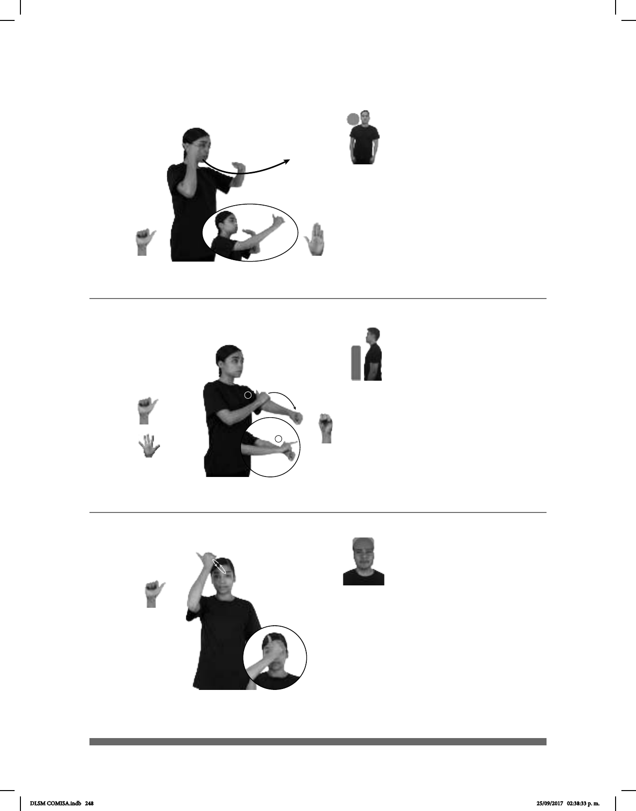

248
(A-46)
APOCALIPSIS MUCHOS SÍMBOLOS DIFERENTES pro-ÉL TENER
El Apocalipsis tiene muchos símbolos diferentes.
1
2
(A-47)
dm-TOMÁS APÓSTOL JESÚS
(A-48)
_______________________o.i.p
CÓMO SEÑA dm-APÓSTOLES
¿Cómo haces la seña de apóstoles?
Seña: SB
MD A.1, MB B-P.2
MD palma hacia la izquierda.
MB palma hacia abajo.
MD inicia a la altura del cuello
del lado derecho y termina a la altura de la
cabeza. MB a la altura de la cara.
La MD se mueve formando un
arco por debajo de la MB.
Cabeza ligeramente
agachada, ojos semicerrados, labios soplando.
sust. m. Último libro del Nuevo
Testamento.
la seña se usa en la comunidad
sorda mormona.
Seña: SB
MD seña que pasa de A.1 a
L.1, MB S.1
MD palma hacia abajo. MB
palma hacia la derecha.
A la altura del pecho. MD sobre
MB.
La MD se mueve formando un
arco, del antebrazo a la muñeca de MB, mien-
tras el dedo índice se extiende.
sust. m. Persona que, con esfuerzo
causa o a propagar una doctrina en la que cree.
la seña se usa en la comunidad
sorda de los Testigos de Jehová.
Seña: SM
A.1
Palma hacia adentro.
A la altura de la frente.
La mano se mueve
formando círculos.
sust. m. Cada uno de los
doce discípulos de Jesucristo, escogidos
por él para predicar sus enseñanzas más
San Pablo y San Bernabé.
La seña se usa en la
comunidad sorda católica.
DLSM COMISA.indb 248 25/09/2017 02:38:33 p. m.